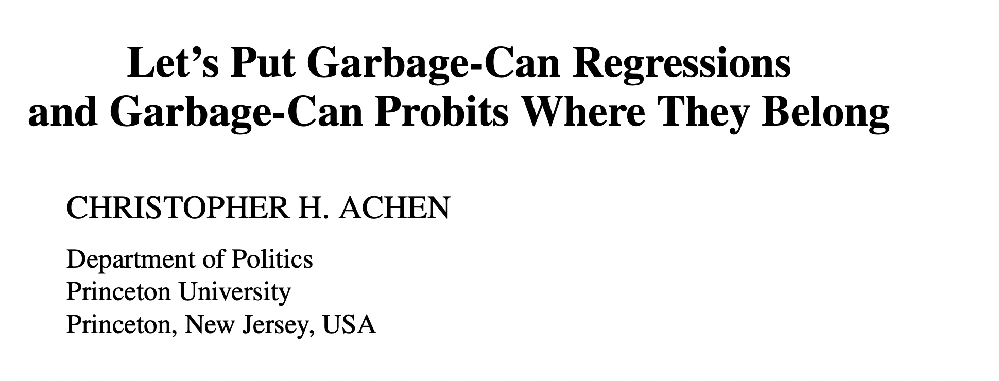
Natural experiments
POL51
Haley Daarstad
University of California, Davis
August 26, 2026
Plan for today
The causal revolution
Natural experiments
Regression discontinuities
# A brief, unfair history of social science research
Garbage can models
- for a long time there was a tendency to estimate “garbage can” models
- throw every variable under the sun into regression model, hope for the best
- in some cases, no pre-meditated treatment variable
- little recognition that of tradeoff between controlling for forks but avoiding pipes/colliders
An empty-garbage-can model
Some studies don’t even control for confounds
From the dog ownership improves health article in the homework:
“A possible limitation was that the analyses were not adjusted for confounders.”
Huge confounds abound! A person who is too sick to care for a dog won’t get one
Causal inference
- More recently: a greater emphasis on worrying about causality
- Recognition that confounds are lurking everywhere, and we should worry about them
- Recognition that pipes and colliders means we shouldn’t just throw every variable into a model
Improvements but obvious limits
IF we can correctly specify our model (i.e., control for all backdoors, leave front-doors open) we will identify the effect of X on Y
Easier said than done! Often there is some confound (like W) that we know exists but can’t measure, or worse, don’t know exists at all
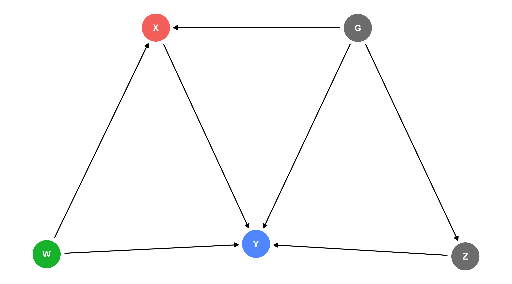
The causal revolution
Hard to correctly specify the DAG and measure all the variables; what can we do?
Ideal = an experiment – where treatment is randomly assigned – but this is rarely feasible
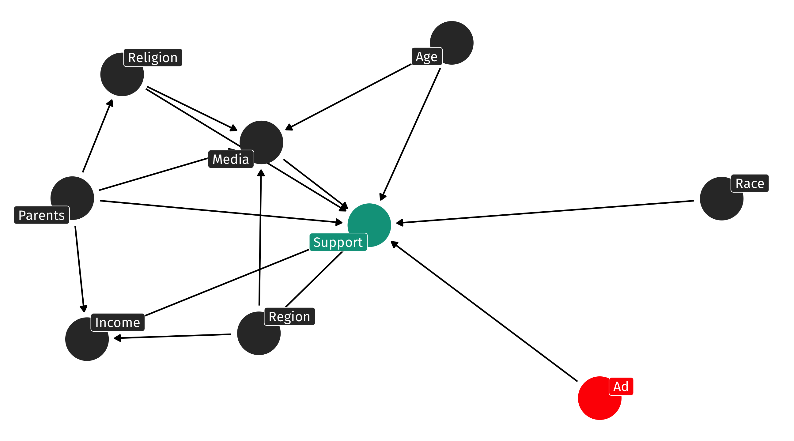
Natural experiments
Alternative - find moments, situations, or weird, freak occurrences where some group is exposed to some treatment by chance while another group was not
These weird moments in history are called natural experiments
As though nature accidentally created an experiment
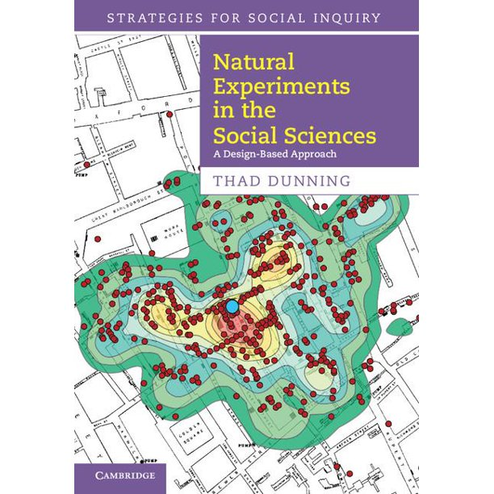
A good year for causality
2021 Nobel Prize winners in economics pioneered quasi-experimental methods – using research designs that leverage natural experiments
# Regression discontinuity
Do gifted programs pay off?
- Millions of kids across the US placed in gifted programs
- Parents/society have to weigh pros and cons; is this worth doing?
- For instance: does being in gifted program increase your chances of success later in life?
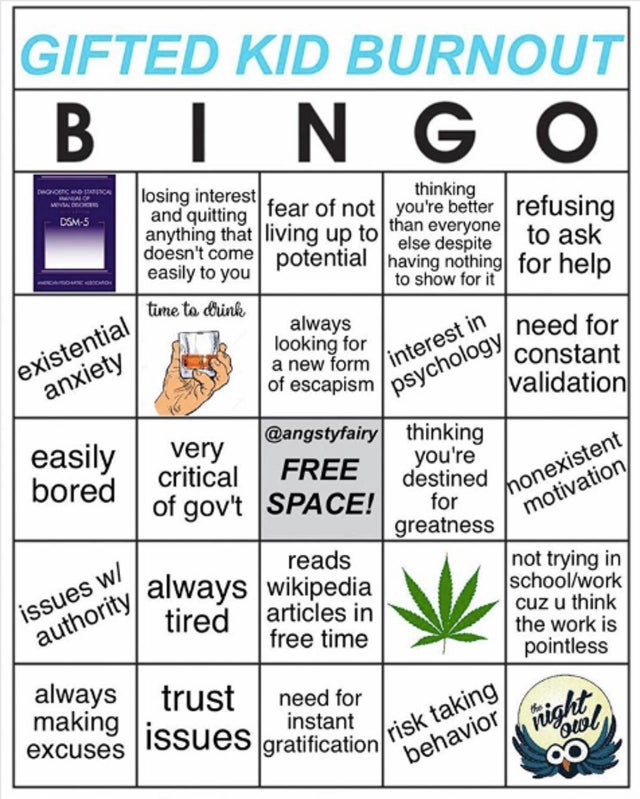
The (fake) data
Go out and collect data on people who were and were not in gifted:
| Name | Age | Grade | gifted | earnings |
|---|---|---|---|---|
| Austynn | 87 | 88 | no | 48370 |
| Drashawn | 26 | 84 | yes | 68693 |
| Sourish | 28 | 90 | no | 111073 |
| Korianna | 71 | 87 | no | 139398 |
| Shawday | 70 | 84 | no | 148608 |
| Dora | 68 | 84 | no | 100895 |
| Cindy | 30 | 83 | no | 146109 |
| Casiana | 46 | 89 | yes | 70852 |
The results
Big gifted program premium: $25,334.02 more in earnings
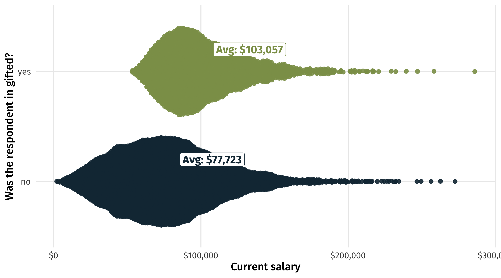
The problem
So many potential confounds, including ones that are really, really hard to measure (like ability) and others that are unknown
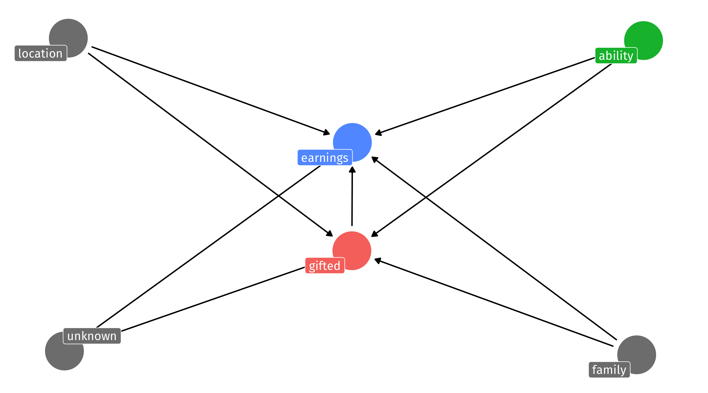
The solution
To get into gifted you typically need a certain score on an aptitude/IQ test
Imagine that the cutoff score is 75/100; above you’re in gifted, below you are not
This cutoff is known as the assignment mechanism = why some receive treatment (gifted program) or not
How was that cutoff chosen?
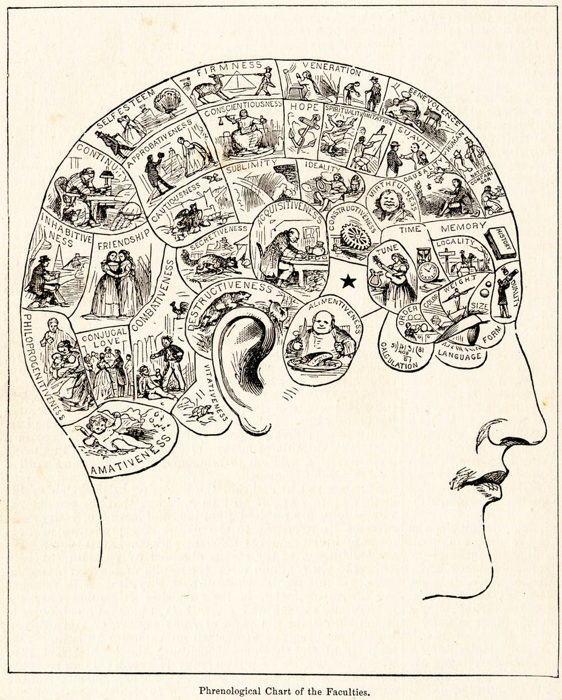
The solution
The precise cutoff is completely arbitrary; could have been 74.5, or 76, or 80, or whatever
The arbitrary nature of the cutoff creates a natural experiment
A student who a 76 and a student who got a 34 are probably very different;
if one makes more money than the other today, is that because of gifted? or other factors (ability?)
But a student who got a 76 and one who got a 74 are probably interchangeable
Few points difference might be function of: random error, luck, whatever
The natural experiment
If we look only at students who scored close to the 75 cutoff we have the makings of a natural experiment
Around cutoff, essentially random whether you get treatment (gifted program) or not
Why? Score on test = ability + luck + measurement error
Example: Joe got a 74 and Amy got a 76; if they took the test many times, how often would Joe score worse than Amy?
“Natural experiments”: situations where some thing (often a rule) creates random assignment of treatment
Looking around the cutoff
In analysis terms, (can be) simple: look only at students who scored close to 75, let’s say +/- 2:
The results
Ouch! Looks like being in gifted actually hurts students in the long-run:
| all students | students near cutoff | |
|---|---|---|
| (Intercept) | 77723 *** | 113631 *** |
| (397) | (1957) | |
| giftedyes | 25334 *** | -19055 *** |
| (793) | (2765) | |
| nobs | 10000 | 437 |
| *** p < 0.001; ** p < 0.01; * p < 0.05. | ||
Visualize it
People with higher aptitude/training/ability/etc. better off today:
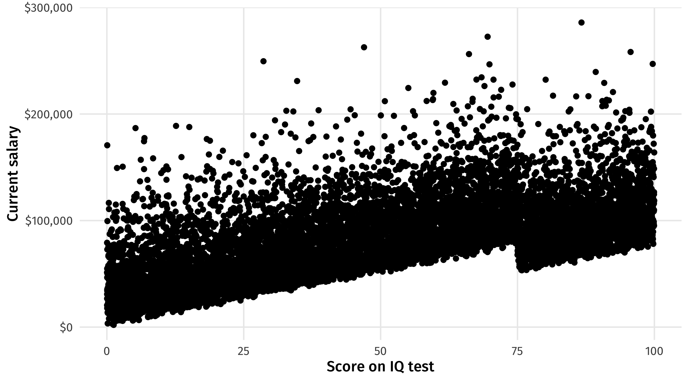
The cutoff
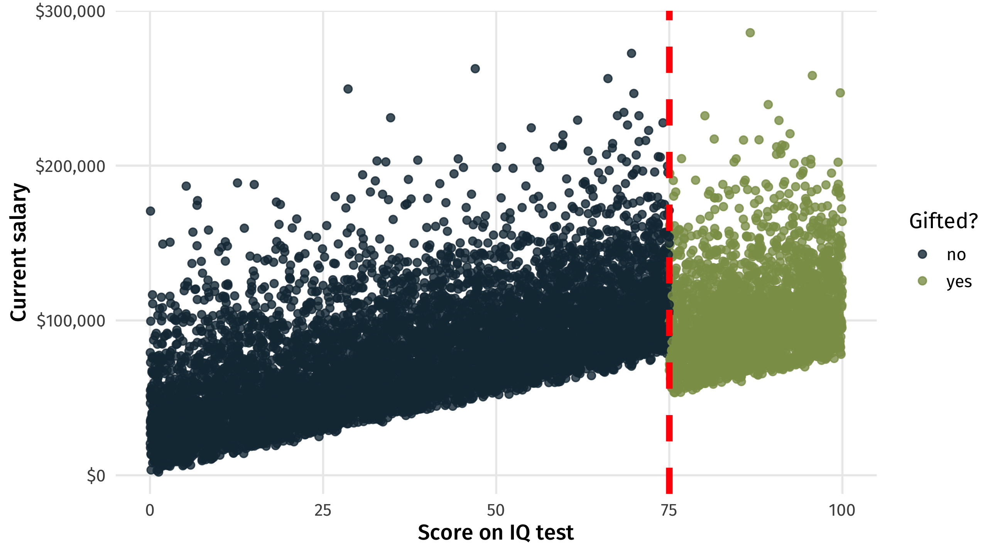
The natural experiment

The discontinuity
These are the students who, by chance, just barely made it (or not) into gifted
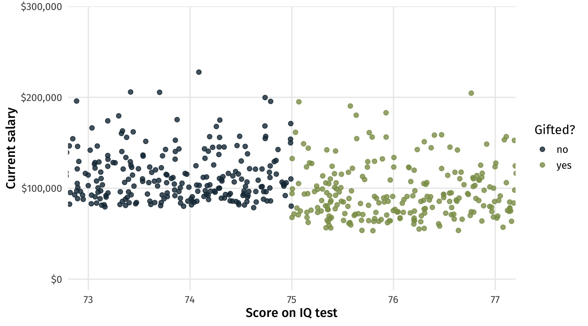
The discontinuity
On average, the students who by chance made it in make less money
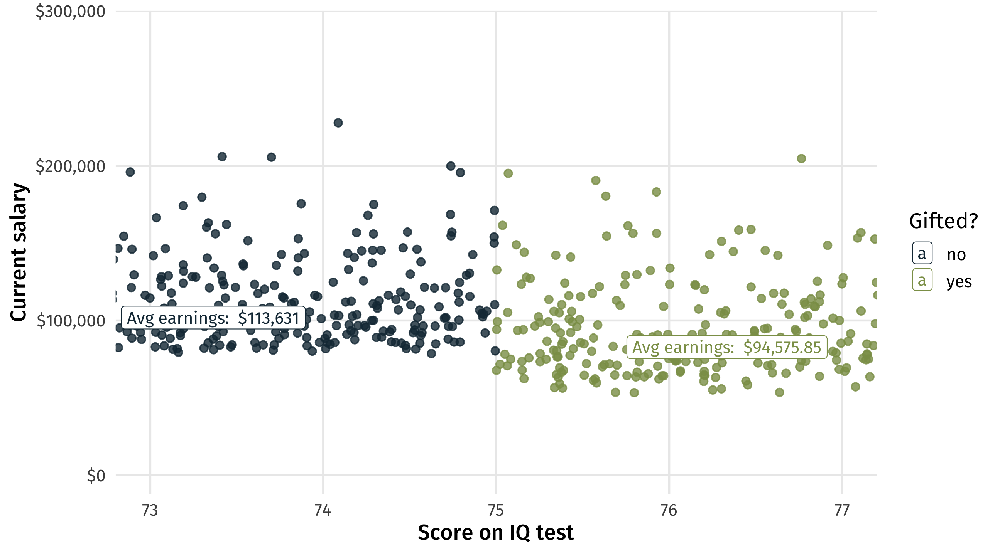
The payoff
In the naive estimate we think gifted programs help students in the long-run;
With the discontinuity we see the opposite: gifted hurts
Arbitrary cutoff gets us clean estimates for free: no need to worry about backdoor paths
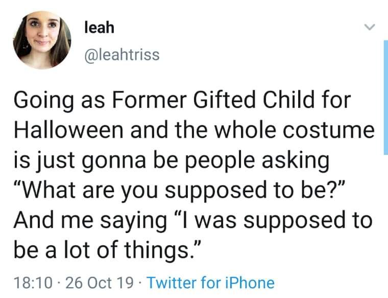
# Other examples
Moral hazard
How much moral hazard is there in insurance? E.g., if your insurance covers 10k in services, will provider charge you $10k even if you only need 8k in services?
Naive estimate:
lm(charge ~ insurance)What’s wrong with the naive estimate?
| has insurance | Hospital charge |
|---|---|
| TRUE | 50939 |
| FALSE | 30663 |
| FALSE | 35241 |
| FALSE | 40239 |
| TRUE | 16313 |
| TRUE | 99861 |
| FALSE | 72163 |
| TRUE | 43020 |
Diamond and Doyle
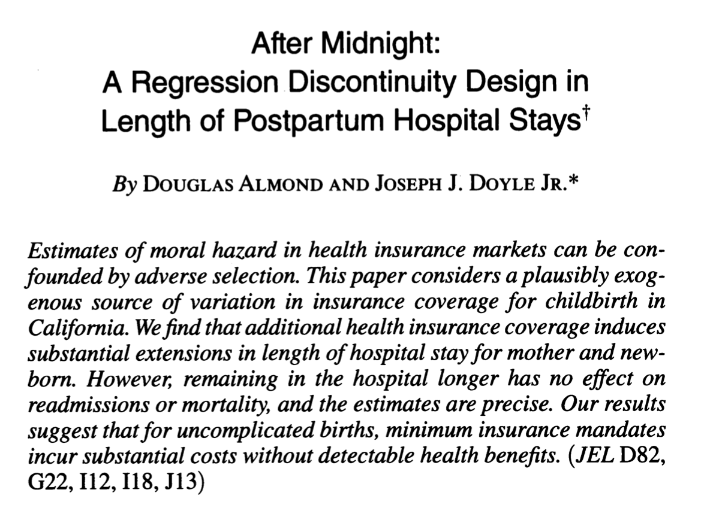
Baby problems
Insurance will cover two nights in a hospital after delivery
But how long is “a night”?
Nights counted by number of midnights (arbitrary cutoff)
👶 born on Monday at 11:59pm = gets Tue + Wed in hospital
👶 born on Tuesday at 12:01am = gets Tue + Wed + Thur in hospital (by chance, get extra minimum coverage)
Finding
1 in 4 babies born after midnight spend an extra night in hospital (💵💵💵), even when there is no health benefit to doing so
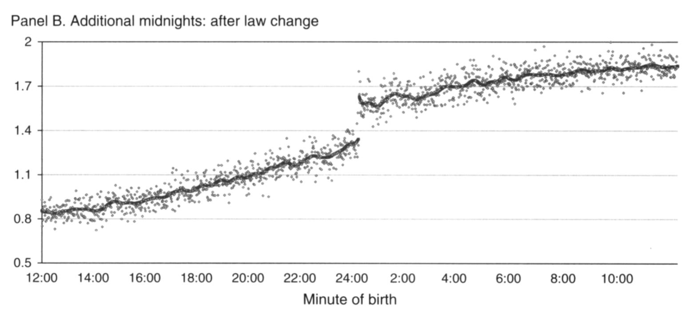
Other examples: McNamara and the Whiz Kids
What effect did bombing raids in Vietnam have long-term?
Problem: the places that were bombed are very different from the places that were never bombed
Biggest confound: if bombing accurate, places that were most bombed had most Vietcong presence
| month | control | bombs |
|---|---|---|
| September | Contested | 0 |
| August | Contested | 0 |
| August | Contested | 0 |
| August | Full state | 0 |
| July | Partial rebel | 0 |
McNamara and the Whiz Kids
- Decision to bomb based on threat scoring system (1, very secure, to 5, very insecure)
- Final score based on average of sub-scores, then rounded to whole number so:
- 4.4999 –> 4, whereas 5.0001 -> 5 (arbitrary cutoff)
- Paper shows long-term deleterious effects to bombing
How do we know we have a natural experiment?
In a true experiment, the treatment and control group should look similar or balanced demographically
i.e., if I put people into two groups at random, it should be very unlikely that the average person in the control is 22 years old and the average in treatment group is 55 years old
One thing we can do is compare the characteristics of the treatment and control group in our natural experiment; are they in fact similar?
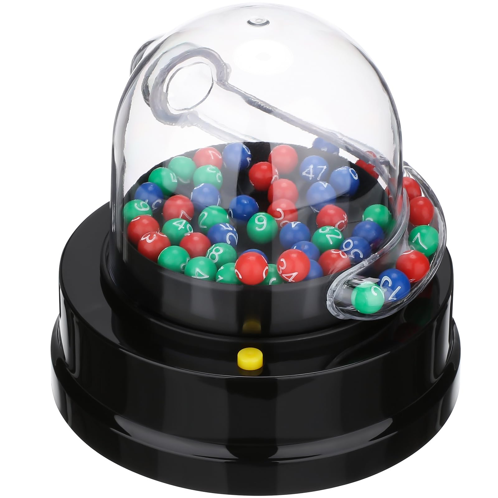
Are they similar? Back to the gifted program
It looks like people close to the cutoff are pretty balanced
| Gifted? | Average age | Percent women | Average height | Percent drug use |
|---|---|---|---|---|
| no | 53.2 | 50.5 | 69.3 | 49.1 |
| yes | 54.4 | 47.0 | 69.4 | 52.1 |
Some evidence we have a natural experiment
Why some evidence?
If checking for balance is a way to see if we have a natural experiment, why can’t we always do this?
Want to know the effect of X on Y; test for balance on X; if balanced we are good to go / not confounded
Remember the problem is often we don’t know what confounds are out there! Or we know, but can’t measure them!
Checking for balance is suggestive, weak evidence that we have a natural experiment
Big picture
Natural experiments are “strongest” causal tool, and regression discontinuity designs are probably the most convincing version
Easy to implement; less worry about confounding; the tough part? Finding one! And collecting the data
Often the result of some rule, boundary, or some other random, arbitrary process having a sudden impact in the world
Premium on: specific knowledge of a particular region/area/issue
🚨 Your turn: 🧠🧠🧠 🚨
With your teams/groups:
Write down as many rules, demarcations, cutoffs, etc., out there in the world that you can think of.
Can any of these create an opportunity for a natural experiment, where something happens to some people/countries/places but not to others as a result of this rule/cutoff/thing?
What problem could that natural experiment help solve? In the gifted program case: the IQ test cutoff helps solve the problem of estimating the effect of gifted programs on future success.
# Limitations
No free lunch
Natural experiments are great but there are limitations:
Changing estimate If we find a good one, the thing we are trying to estimate likely changes (is this bad? depends)
Sorting at the cutoff If there’s a rule out there that has consequences, people will do what they can to end up on the right side of it
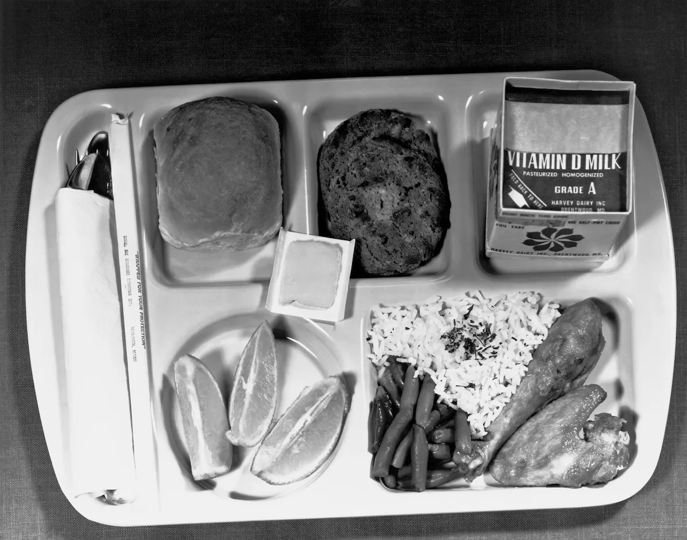
Limitations: changing estimates
By focusing on units near cutoff, our estimate subtly changes:
effect of putting a child in gifted on future earnings, on averageeffect of putting a child with roughly 75 IQ in gifted on earnings ✅
Is this a problem? Depends, but better to know one narrow(er) fact that nothing at all?
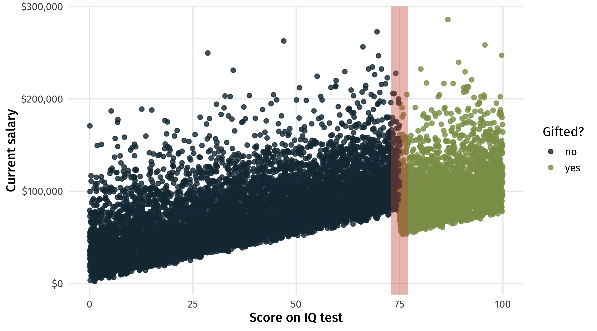
Limitations: “sorting around the cutoff”
There is also a risk that if people know about the cutoff they will behave strategically in ways that confound our estimate
Imagine that there is room to pressure/bully the school psychologist into turning a 74.9 into a 75 so little Timmy can be gifted
And image wealthier/better-connected/etc parents are better bullies than poor parents
In that case, being gifted is no longer random
wealthy parents cause you to get over the cutoff
Sorting around the cut-off
If parents can force almost-there kids into gifted, parents become a backdoor path to earnings (since your parents likely affect your earnings directly, or in other ways)
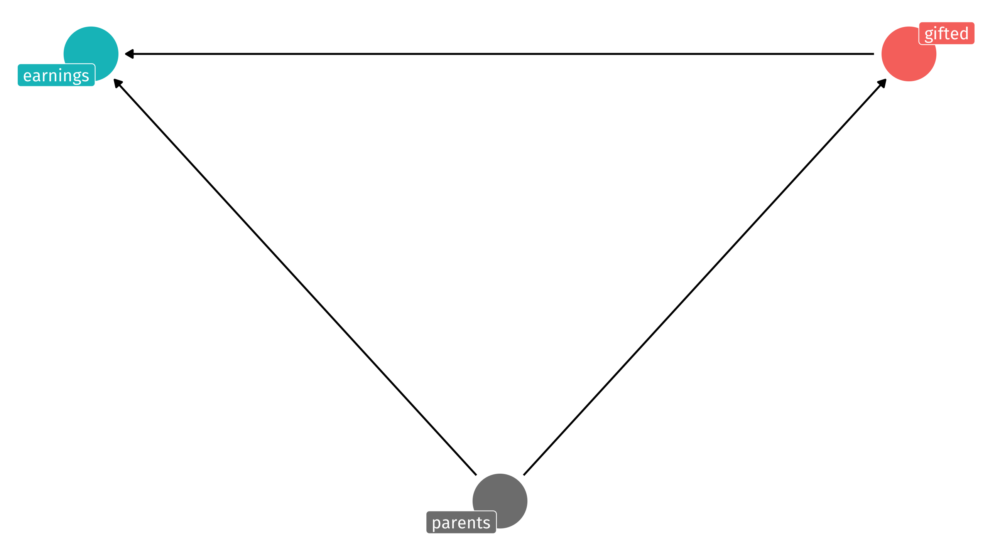
🚨 Your turn: sorting around the cutoff 🚨
Think back to the arbitrary cutoff you came up with in the last exercise.
- Could someone “game” or sort around that cutoff?
- What would that look like?
- And how could it confound your estimate / ruin the natural experiment?
Where to go from here?
We’ve done a lot this quarter
Where to go from here?
- Basics of data wrangling, visualization, and analysis
- Modeling relationships between variables
- Thinking and modeling causally
- Making inferences with uncertainty
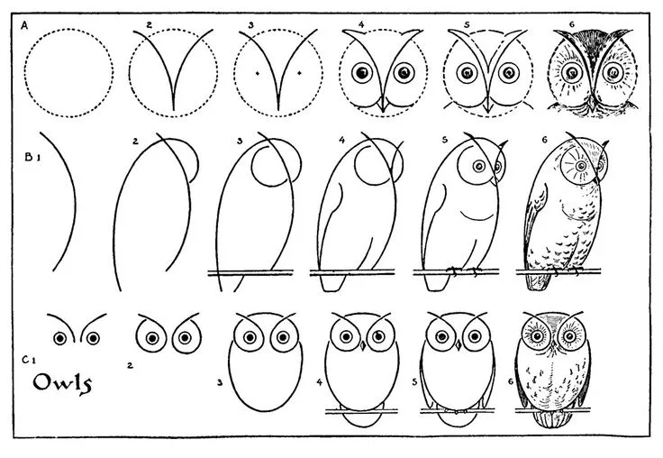
Keep learning R
Every Tuesday: free data + a visualization challenge + free code

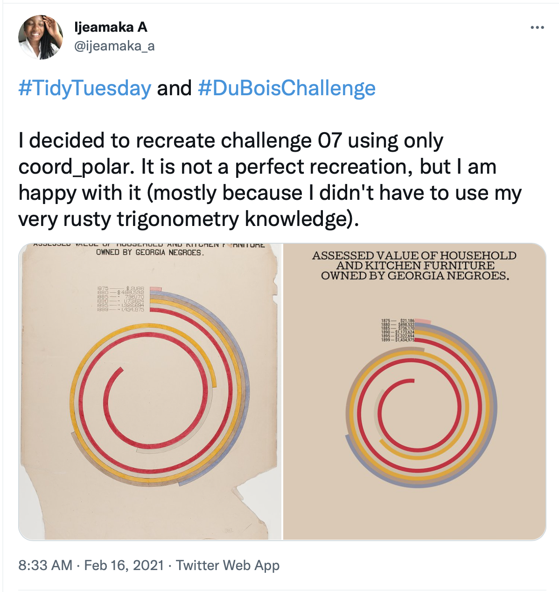
Keep thinking causally

No randomization; who is being compared here?

But also: don’t be a lazy cynic! What is the confound?
Keep thinking about uncertainty
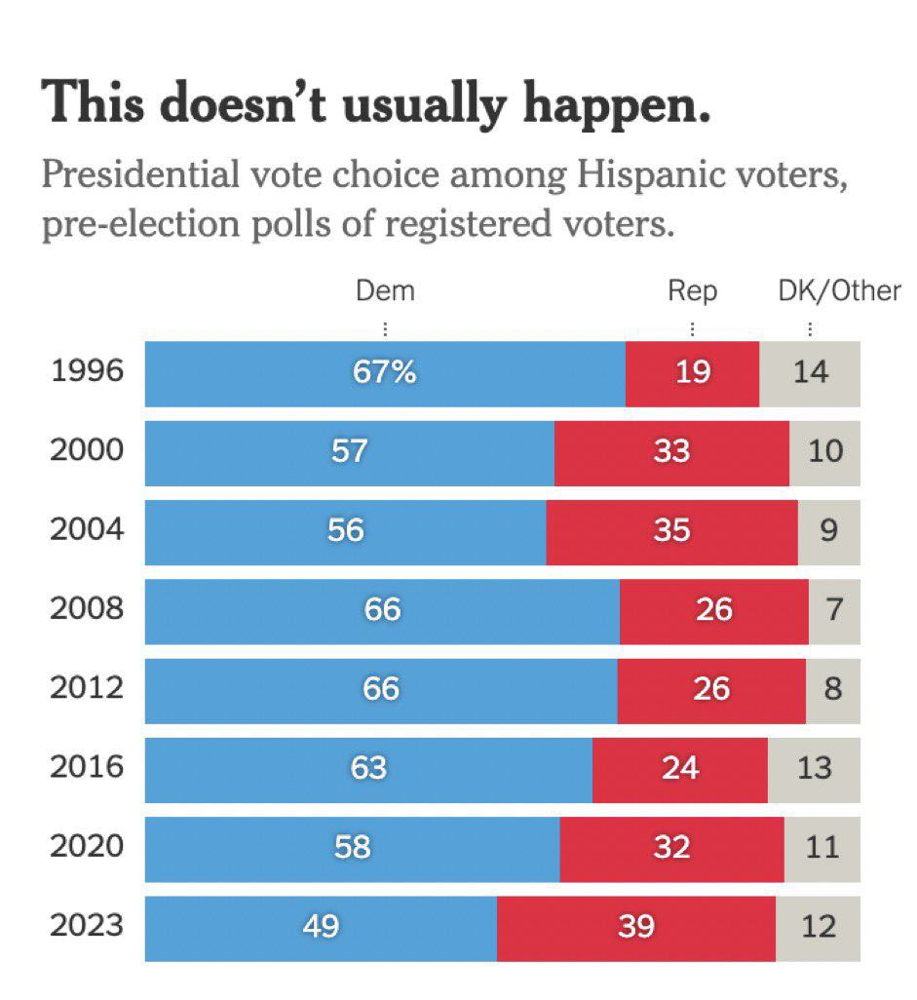
Where is the uncertainty?
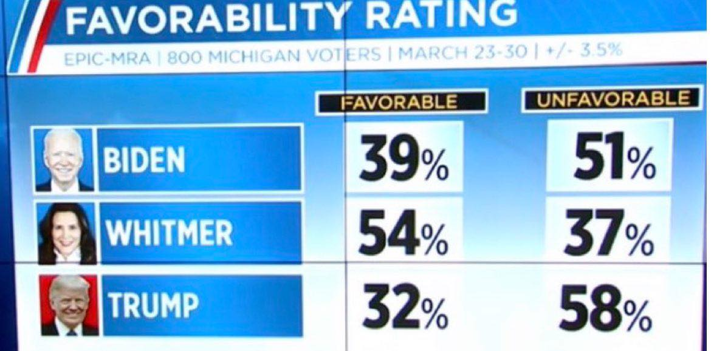
95% CI between Biden and Trump overlap